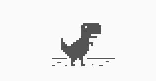

1.En sus oficinas de Mountain View tienen el fósil real de dinosaurio.
2.Ningún trabajador puede estar a más de 30.48m de la comida.
3.Sus empleados tienen el 20% de su tiempo laboral disponible para pensar en nuevos proyectos.
4.Cuando hay un estreno interesante, Google alquila un cine entero para sus trabajadores.
5.El interfaz de Google también se encuentra en idioma Klingon, surgido de Star Trek.
6.El botón “Voy a tener suerte”, le cuesta a Google 110 millones de dólares año.
7.El primer Tweet de Google fue:” I’m 01100110 01100101 01100101 01101100 01101001 01101110 01100111 00100000 01101100 01110101 01100011 01101011 01111001 00001010″. Que significa “Voy a tener suerte“.
8.La pantalla dará un giro completo si escribes “do a barrel roll” en la barra de búsqueda.
9.Si escribes “zerg rush” descubrirás un juego escondido.
10.En Google imágenes descubrirás un juego al escribir “atari breakout”(si te pasas sale la flor Echinacea, por lo menos me ocurrió a mi)